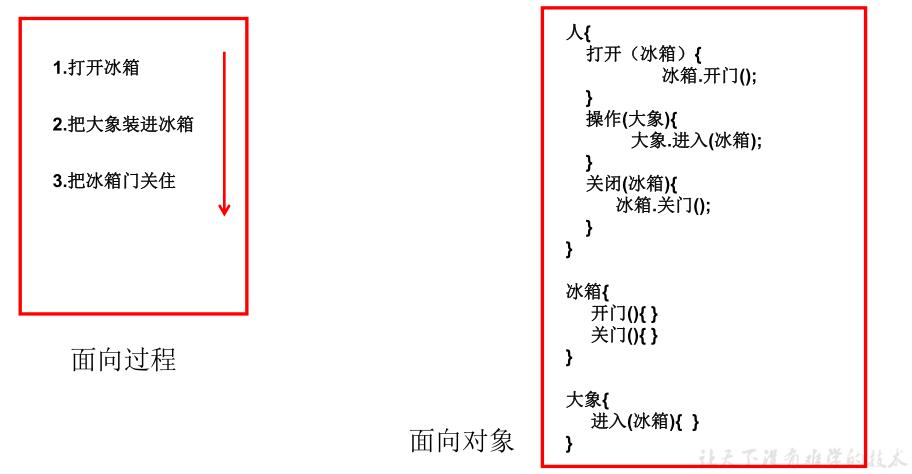
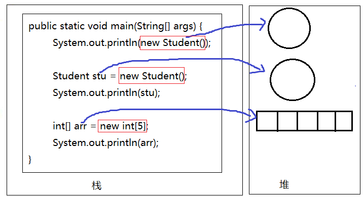
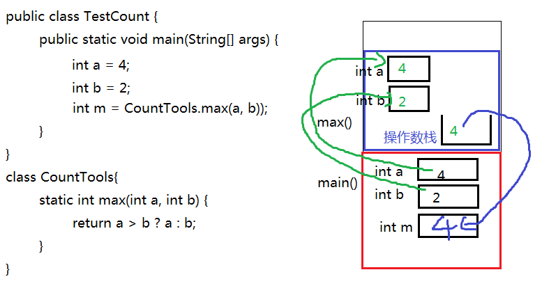
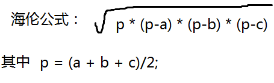
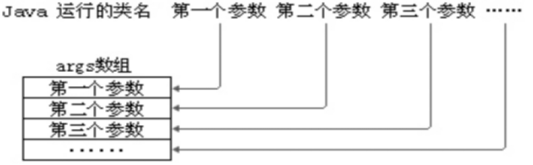
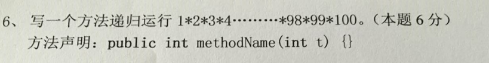
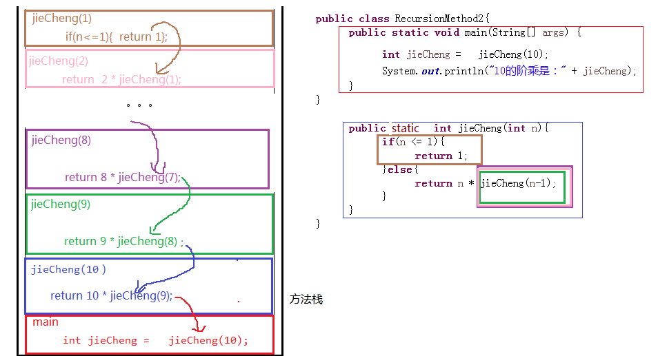

第5章 面向对象基础（上）
学习目标
初步了解面向对象的思想
能够明确类与对象关系
能够掌握类的定义格式
能够掌握创建对象格式
理解包的作用
掌握包的声明和导入
能够通过类访问类的静态成员变量和静态成员方法
能够通过对象访问对象的非静态成员变量和非静态成员方法
能够区别静态方法和非静态方法
能够区别类变量与实例变量
能够区别成员变量与局部变量
能够理解方法的调用执行机制
能够理解方法的参数传递机制
掌握方法的可变参数的使用
掌握方法重载的概念
能够判断出方法的重载
了解命令行参数
理解递归方法
理解对象数组
第五章 面向对象基础（上）
5.1 面向对象思想概述
5.1.1 概述
Java语言是一种面向对象的程序设计语言，而面向对象思想（OOP）是一种程序设计思想，我们在面向对象思想的指引下，使用Java语言去设计、开发计算机程序。 这里的对象泛指现实中一切事物，每种事物都具备自己的属性和行为。面向对象思想就是在计算机程序设计过程中，参照现实中事物，将事物的属性特征、行为特征抽象出来，描述成计算机事件的设计思想。 它区别于面向过程思想（POP），强调的是通过调用对象的行为来实现功能，而不是自己一步一步的去操作实现。
``
5.1.2 面向对象与面向过程的区别
面向过程：POP: Process-Oriented Programming
以函数（方法）为最小单位
数据独立于函数之外
面向功能划分软件结构
以过程，步骤为主，考虑怎么做
程序员是具体执行者
制约了软件的可维护性和可扩展性
面向对象：OOP: Object Oriented Programming
以类/对象为最小单位，类包括：数据+方法
把软件系统看成各种对象的集合
以对象（谁）为主，考虑谁来做，谁能做
程序员是指挥者
面向对象仍然包含面向过程，只不过关注点变了，关注谁来做
软件可重用性、可维护性和可扩展性强
面向对象思想是一种更符合我们思考习惯的思想，它可以将复杂的事情简单化，并将我们从执行者变成了指挥者。
例子：吃饭，洗衣服
把大象装进冰箱

5.1.3 面向对象的三大特征
面向对象的语言中，包含了三大基本特征，即：
- 封装(Encapsulation）
- 继承(Inheritance)
- 多态(Polymorphism)
5.2 类和对象
5.2.1 类与对象的概念及关系
万物皆对象，环顾周围，你会发现很多对象，比如桌子，椅子，同学，老师，顾客，收银员等。
描述身边的对象：

如何描述对象？
对象的属性：姓名，年龄，体重，员工编号，部门等对象的静态特征
对象的行为：购买商品，收款，打印账单等对象的动态特征或行为特征或者功能
什么是对象？
- 对象：是一个具有特定属性和行为特征的具体事物。
什么是类？
- 类：是一类具有相同特征的事物的抽象描述，是一组相同属性和行为的对象的集合。
类与对象的关系
- 类是对一类事物的描述，是抽象的。
- 对象是一类事物的实例，是具体的。
- 类是对象的模板，对象是类的实体。
上例中的类和对象：**顾客**是一类事物的抽象描述，即为类，他们都有姓名，年龄，体重这些属性特征和购买商品的行为特征；**张三**是一个具体的顾客，即为对象。**收银员**是另一类事物的抽象描述，他们都有员工号，姓名、部门这些属性特征和收款、打印账单的行为特征；**李四**是一个具体的收银员。
举例描述类和对象：学生、手机、汽车、猫等
5.2.2 类的定义
Java中类的定义，就是把现实中类的概念用Java语言描述。
Java中用class关键字定义一个类，并定义类的成员：成员变量（属性）和成员方法（行为）。
类的定义格式
xxxxxxxxxxpublic class 类名 { //成员变量，描述这类事物的属性 //成员方法，描述这类事物的行为}- 成员变量：和以前定义变量几乎是一样的。只不过位置发生了改变。在类中，方法外，用于描述对象的属性特征。
- 成员方法：和以前写的main方法格式类似。只不过功能和形式更丰富了。在类中，方法外，用于描述对象的行为特征。
定义类的代码举例：
xxxxxxxxxx//定义顾客类public class Customer { //成员变量,描述属性特征 String name;//姓名 int age;//年龄 int weight;//体重 //成员方法，描述行为特征 public void shopping(){ System.out.println("购物..."); }}练习：
定义学生类，汽车类
5.2.3 对象的创建与使用
类是对象的模板，所以通过类创建这个类的对象，或者说创建这个类的一个实例，这个过程称为类的实例化：
创建对象语法格式：
类名 对象名= new 类名 ();
xxxxxxxxxx//创建顾客对象Customer c=new Customer();使用对象的成员，使用“. ”操作：
使用成员变量：对象名.属性 使用成员方法：对象名.方法名()
xxxxxxxxxxc.name="张三"; //访问对象的属性，赋值c.age=18;System.out.println(c.name+"--"+c.age); //访问对象的属性，获取值c.shopping(); //访问对象的方法
练习：
定义手机类并创建对象再使用
5.2.4对象的内存分析
JVM内存结构图：

| 区域名称 | 作用 |
|---|---|
| 栈 | 虚拟机栈，用于存储正在执行的每个Java方法的局部变量表等。局部变量表存放了编译期可知长度的各种基本数据类型、对象引用，方法执行完，自动释放。 |
| 堆 | 存储对象（包括数组对象），new来创建的，都存储在堆内存。 |
| 方法区 | 存储已被虚拟机加载的类信息、常量、静态变量、即时编译器编译后的代码等数据。 |
| 程序计数器 | 程序计数器是CPU中的寄存器，它包含每一个线程下一条要执行的指令的地址 |
| 本地方法栈 | 当程序中调用了native的本地方法时，本地方法执行期间的内存区域 |
对象名中存储的是什么呢？答：对象地址
xclass Student{ }public class TestStudent{ //Java程序的入口 public static void main(String[] args){ System.out.println(new Student());//Student@7852e922 Student stu = new Student(); System.out.println(stu);//Student@4e25154f int[] arr = new int[5]; System.out.println(arr);//[I@70dea4e }}//Student和TestStudent没有位置要求，谁在上面谁在下面都可以//但是如果TestStudent类的main中使用了Student类，那么要求编译时，这个Student已经写好了，不写是不行的//如果两个类都在一个.java源文件中，只能有一个类是public的发现学生对象和数组对象类似，直接打印对象名和数组名都是显示“类型@对象的hashCode值"，所以说类、数组都是引用数据类型，引用数据类型的变量中存储的是对象的地址，或者说指向堆中对象的首地址。
那么像“Student@4e25154f”是对象的地址吗？不是，因为Java是对程序员隐藏内存地址的，不暴露内存地址信息，所以打印对象时不直接显示内存地址，而是JVM提取了对象描述信息给你现在，默认提取的是对象的运行时类型@代表对象唯一编码的hashCode值。

5.3 包（Package）
5.3.1 包的作用
（1）可以避免类重名：有了包之后，类的全名称就变为：包.类名
（2）分类组织管理众多的类
例如：
- java.lang----包含一些Java语言的核心类，如String、Math、Integer、 System和Thread等，提供常用功能
- java.net----包含执行与网络相关的操作的类和接口。
- java.io ----包含能提供多种输入/输出功能的类。
- java.util----包含一些实用工具类，如集合框架类、日期时间、数组工具类Arrays，文本扫描仪Scanner，随机值产生工具Random
- java.text----包含了一些java格式化相关的类
- java.sql和javax.sql----包含了java进行JDBC数据库编程的相关类/接口
- java.awt和java.swing----包含了构成抽象窗口工具集（abstract window toolkits）的多个类，这些类被用来构建和管理应用程序的图形用户界面(GUI)。
（3）可以控制某些类型或成员的可见范围
如果某个类型或者成员的权限修饰缺省的话，那么就仅限于本包使用
5.3.2 声明包的语法格式
xxxxxxxxxxpackage 包名;注意：
(1)必须在源文件的代码首行
(2)一个源文件只能有一个声明包的语句
包的命名规范和习惯： （1）所有单词都小写，每一个单词之间使用.分割 （2）习惯用公司的域名倒置
例如：com.atguigu.xxx;
建议大家取包名时不要使用“java.xx"包
5.3.3 如何跨包使用类
前提：被使用的类或成员的权限修饰符是>缺省的，即可见的
（1）使用类型的全名称
例如：java.util.Scanner input = new java.util.Scanner(System.in);
（2）使用import 语句之后，代码中使用简名称
import语句告诉编译器到哪里去寻找类。
import语句的语法格式：
xxxxxxxxxximport 包.类名;import 包.*;import static 包.类名.静态成员; //后面再讲注意：
使用java.lang包下的类，不需要import语句，就直接可以使用简名称
import语句必须在package下面，class的上面
当使用两个不同包的同名类时，例如：java.util.Date和java.sql.Date。一个使用全名称，一个使用简名称
示例代码：
package com.atguigu.bean;
public class Student {
// 成员变量
private String name;
private int age;
// 构造方法
public Student() {
}
public Student(String name, int age) {
this.name = name;
this.age = age;
}
// 成员方法
public void setName(String name) {
this.name = name;
}
public String getName() {
return name;
}
public void setAge(int age) {
this.age = age;
}
public int getAge() {
return age;
}
}
package com.atguigu.test;
import java.util.Scanner;
import java.util.Date;
import com.atguigu.bean.Student;
public class Test{
public static void main(String[] args){
Scanner input = new Scanner(System.in);
Student stu = new Student();
String str = "hello";
Date now = new Date();
java.sql.Date d = new java.sql.Date(346724566);
}
}
5.4 成员变量
5.4.1 变量的分类
根据定义位置不同分为：
局部变量：定义在方法体内或其他局部区域内的变量（之前所使用的都是main方法中定义的变量，为局部变量）。
成员变量：定义在类的成员位置，在方法体外，与方法（例如main方法）平行的位置。并且有修饰符修饰。
根据修饰的不同成员变量又分为：
- 类变量：或叫静态变量，有static修饰的成员变量。（上例中的country为类变量）
- 实例变量：没有static修饰的成员变量。
5.4.2 成员变量的声明
语法格式：
class 类名{
【修饰符】 数据类型 属性名; //属性有默认值
【修饰符】 数据类型 属性名 = 值; //属性有初始值
}
说明：常用修饰符有public、缺省、private、protected、final、static
数据类型可以是任意基本数据类型和引用数据类型。
属性名即变量名，符合标识符的命名规则和规范。
举例：
//定义一个中国人类
class Chinese{
public static String country;
public String name;
char gender = '男';//显式赋值
private int age;
}
5.4.3 成员变量的访问
实例变量的访问：
- 对象名.静态成员变量
类变量的访问：
- 类名.静态成员变量
- 对象名.静态成员变量（不推荐）
示例：
public class TestChinese {
public static void main(String[] args) {
//类名.静态成员变量
System.out.println(Chinese.country);
//错误，非静态成员变量必须通过对象.进行访问
// System.out.println(Chinese.name);
Chinese c1 = new Chinese();
//对象名.非静态成员变量
System.out.println(c1.name);
//静态的成员变量也可以通过对象.进行访问
//对象名.非静态成员变量
System.out.println(c1.country);
System.out.println(c1.gender);
}
}
class Chinese{
static String country;
String name;
char gender = '男';
}
5.4.4 成员变量的特点
成员变量有默认初始值（同数组元素默认初始值）
数据类型 默认值 byte，short，int，long 0 float，double 0.0 char 0或'\u0000'表现为空 boolean false 数组，类，接口等引用类型 null 类变量的值是所有对象共享的，而实例变量的值是每个对象独立的
public class TestChinese { public static void main(String[] args) { Chinese c1 = new Chinese(); Chinese c2 = new Chinese(); c1.name = "张三"; c2.name = "李四"; c2.gender = '女'; // c1.country = "中国"; Chinese.country = "中国";//推荐 System.out.println("c1.country = " + c1.country + ",c1.name = " + c1.name + ",c1.gender = " + c1.gender); System.out.println("c2.country = " + c2.country + ",c2.name = " + c2.name + ",c2.gender = " + c2.gender); } } class Chinese{ static String country; String name; char gender = '男'; }
5.4.5 成员变量的内存分析
从内存分析看类变量与实例变量如何呈现的以上特点。
class Test08FieldSave{
public static void main(String[] args){
Chinese c1 = new Chinese();
Chinese c2 = new Chinese();
c1.name = "张三";
c2.name = "李四";
System.out.println(c1.country+“--”+c1.name);
System.out.println(c2.country+“--”+c2.name);
System.out.println("-------------------------");
//修改类变量值
c1.country = "中华人民共和国";
//修改实例变量
c1.name="张三丰";
System.out.println(c1.country+“--”+c1.name);
System.out.println(c2.country+“--”+c2.name);
System.out.println(Chinese.country);
}
}
class Chinese{
static String country = "中国";
String name;
}

5.4.6 小结:成员变量与局部变量的区别
| 成员变量 | 局部变量 | |
|---|---|---|
| 声明的位置 | 直接声明在类的成员位置 | 声明在方法体中或其他局部区域内（方法声明上，构造方法，代码块等） |
| 修饰符 | public、private、static、final等 | 不能使用访问权限修饰符，可以使用final |
| 内存加载位置 | 堆或方法区（static修饰时） | 栈 |
| 初始化值 | 有默认初始化值 | 无默认初始化值 |
| 生命周期 | 同对象或类（static时）的生命周期 | 随着方法的调用而存在，方法调用完毕即消失 |
练习题
（1）声明一个圆的图形类，有属性：半径 在测试类的main中，创建圆的2个对象，为半径属性赋值，并显示两个圆的半径值和面积值 提示：圆周率为Math.PI
（2）声明一个银行账户类，有属性：利率、账号、余额
在测试类的main中，创建账户类的两个对象，其中所有账户的利率是相同的，都是0.035，而账号和余额是不同的，并打印显示
（3）声明一个MyDate类型，有属性：年，月，日
声明另一个Employee类型，有属性：姓名（String类型），生日（MyDate类型）
在测试类中的main中，创建两个员工对象，并为他们的姓名和生日赋值，并显示
5.5 方法
成员变量是用来存储对象的数据信息的，那么如何表示对象的行为功能呢？就要通过方法来实现
5.5.1 方法的概念
方法也叫函数，是一个独立功能的定义，是一个类中最基本的功能单元。
把一个功能封装为方法的目的是，可以实现代码重用，从而简少代码量。
5.5.2 成员方法的分类
根据修饰不同方法主要分为两类：
- 实例方法：没有static修饰的方法，必须通过实例对象来调用。
- 静态方法：有static修饰的方法，也叫类方法，主要特点是可以由类名来调用。
5.5.3 方法的声明
方法声明的位置必须在类中方法外，在类的成员位置
语法格式
【修饰符】 返回值类型 方法名(【参数列表：参数类型1 参数名1,参数类型2 参数名, ...... 】){ 方法体； 【return 返回值;】 }格式说明：
修饰符： 修饰符后面详细讲，例如：public，static等都是修饰符
返回值类型： 表示方法运行的结果的数据类型，与”return 返回值“搭配使用
- 无返回值：void
- 有返回值：可以是任意基本数据类型和引用数据类型
方法名：给方法起一个名字，要符合标识符的命名规则，尽量见名知意，能准确代表该方法功能的名字
参数列表：方法内部需要用到其他方法中的数据，需要通过参数传递的形式将数据传递过来，可以是基本数据类型、引用数据类型、也可以没有参数，什么都不写
方法体：特定功能的代码
return：结束方法，可以返回方法的运行结果
- 可以返回不同类型的数据，对应匹配的返回值类型。
- 如果方法无返回值，可以省去return，并且返回值类型为void
简单示例：
public class Person { public void hello(){ System.out.println("hello world"); } }
示例一：
定义一个圆的图形类：
属性（成员变量）：半径，
功能（成员方法）：计算圆的面积，并返回面积
在测试类的main中，创建圆的2个对象，为半径属性赋值，调用两个方法进行测试 提示：圆周率为Math.PI
class Circle{ double radius; double area() { return Math.PI * radius * radius; } }Circle不同的对象，半径值不同，那么面积也不同，所以这里area()是非静态的
示例二：
定义一个计算工具类CountTools：
方法1：求两个整数的最大值
class CountTools{ static int max(int a, int b) { return a > b ? a : b; } }CountTools只是一个工具类，求两个整数最大值的功能，和CountTools对象无关，所以这里max方法声明为静态的更好，当然也可以声明为非静态的，就是调用的时候需要创建CountTools对象而已。
5.5.4方法的调用
方法必须先声明后使用，不调用不执行，调用一次执行一次。
实例方法的调用
对象名.实例方法(【实参列表】)
示例：
public class TestCircle { public static void main(String[] args) { Circle c1 = new Circle(); c1.radius = 1.2; System.out.println("c1的面积：" + c1.area()); //非静态方法只能通过"对象."进行访问 // System.out.println("c1的面积：" + Circle.area()); Circle c2 = new Circle(); c2.radius = 2.5; System.out.println("c2的面积：" + c2.area()); } } class Circle{ double radius; public double area() { return Math.PI * radius * radius; } }类方法（静态方法）的调用
类名.类方法(【实参列表】)
对象名.类方法(【实参列表】) （不推荐）
示例：
public class TestCount { public static void main(String[] args) { System.out.println(CountTools.max(4, 1)); //静态方法也可以通过“对象.”访问，就是麻烦点 CountTools c = new CountTools(); System.out.println(c.max(2, 5)); } } class CountTools{ static int max(int a, int b) { return a > b ? a : b; } }形参与实参的概念理解
- 形参：在定义方法时方法名后面括号中声明的变量称为形式参数（简称形参）即形参出现在方法定义时。
- 实参：调用方法时方法名后面括号中的使用的值/变量/表达式称为实际参数（简称实参）即实参出现在方法调用时。
方法调用的注意事项
- 调用方法时，实参的个数、类型、顺序必须要与形参列表一一对应
- 调用方法时，如果方法有返回值，可以用与返回值类型相同的变量接受或直接处理返回值结果，如果方法的返回值类型是void，不需要也不能接收和处理返回值结果。
5.5.5 本类内的成员变量和方法访问
在一个类的内部，调用本类的方法或成员变量时，直接用，不需要加“对象名."和"类名."
例外情况：静态方法中不能直接访问本类的非静态的成员变量和成员方法
* 静态不能调用非静态 * 非静态可以调用静态
class Circle{
double radius;
//写一个方法，可以返回“圆对象”的详细信息
String getDetailInfo(){
return "半径：" + radius + "，面积：" + area() +"，周长：" + perimeter();
}
//写一个方法，可以返回“圆对象”的面积
double area(){
return Math.PI*radius*radius;
}
//写一个方法，可以返回“圆对象”的周长
double perimeter(){
return 2*Math.PI*radius;
}
}
class Test{
static void test(){
System.out.println("");
}
void method(){
test();
}
public static void main(String[] args){
method();//错误
test();//正确
}
}
5.5.6 方法的声明与调用练习
声明数学工具类MathTools
（1）静态方法1：可以比较两个整数是否相同 （2）静态方法2：可以判断某个数是否是素数
声明数组工具类ArraysTools
（1）静态方法1：可以实现给任意整型数组实现从小到大排序 （2）静态方法2：可以遍历任意整型数组，返回结果效果：[元素1，元素2，元素3。。。]
声明矩形类Rectangle
（1）包含属性：长、宽
（2）包含3个方法：
- 求面积、
- 求周长、
- 返回矩形对象的信息：长：xx，宽：xx，面积：xx，周长：xx
声明一个圆类，有半径radius成员变量
- 声明一个图形工具类GraphicTools，包含一个静态方法可以返回两个圆中面积大的那一个圆的方法
- 在测试类中测试
5.5.7 方法调用内存分析
方法不调用不执行，调用一次执行一次，每次调用会在栈中有一个入栈动作，即给当前方法开辟一块独立的内存区域，用于存储当前方法的局部变量的值，当方法执行结束后，会释放该内存，称为出栈，如果方法有返回值，就会把结果返回调用处，如果没有返回值，就直接结束，回到调用处继续执行下一条指令。
栈结构特点：先进后出，后进先出。
示例一：
public class TestCount { public static void main(String[] args) { int a = 4; int b = 2; int m = CountTools.max(a, b)); } } class CountTools{ static int max(int a, int b) { return a > b ? a : b; } }
示例二：
public class TestCircle { public static void main(String[] args) { Circle c1 = new Circle(); c1.radius = 1.2; int area1 = c1.area(); Circle c2 = new Circle(); c2.radius = 2.5; int area2 = c2.area(); } } class Circle{ double radius; public double area() { return Math.PI * radius * radius; } }
示例三：
public class Test { public static void main(String[] args) { int[] arr = {2,4,1,5,3}; ArrayUtil.sort(arr); for (int i = 0; i < arr.length; i++) { System.out.println(arr[i]); } } } class ArrayUtil{ public static void sort(int[] arr){ for (int i = 1; i < arr.length; i++) { for (int j = 0; j < arr.length - i; j++) { if(arr[j] > arr[j+1]){ int temp = arr[j]; arr[j] = arr[j+1]; arr[j+1] = temp; } } } } }
5.6 方法参数的值传递机制
方法的参数传递机制：实参给形参赋值
方法的形参是基本数据类型时，形参值的改变不会影响实参；
方法的形参是引用数据类型时，形参地址值的改变不会影响实参，但是形参地址值里面的数据的改变会影响实参，例如，修改数组元素的值，或修改对象的属性值。
- 注意：String、Integer等特殊类型容易错
示例代码1：
class Test{
public static void swap(int a, int b){
int temp = a;
a = b;
b = temp;
}
public static void main（String[] args){
int x = 1;
int y = 2;
swap(x,y);//调用完之后，x与y的值不变
}
}
示例代码2：
class Test{
public static void change(MyData my){
my.num *= 2;
}
public static void main(String[] args){
MyData m = new MyData();
m.num = 1;
change(m);//调用完之后，m对象的num属性值就变为2
}
}
class MyData{
int num;
}
示例代码3：
public class Test {
public static void main(String[] args) {
int[] arr = {2,4,1,5,3};
ArrayUtil.sort(arr);
for (int i = 0; i < arr.length; i++) {
System.out.println(arr[i]);
}
}
}
class ArrayUtil{
public static void sort(int[] arr){
for (int i = 1; i < arr.length; i++) {
for (int j = 0; j < arr.length - i; j++) {
if(arr[j] > arr[j+1]){
int temp = arr[j];
arr[j] = arr[j+1];
arr[j+1] = temp;
}
}
}
}
}
陷阱1：
/*
陷阱1：在方法中，形参 = 新new对象，那么就和实参无关了
*/
class Test{
public static void change(MyData my){
my = new MyData();//形参指向了新对象
my.num *= 2;
}
public static void main(String[] args){
MyData m = new MyData();
m.num = 1;
change(m);//调用完之后，m对象的num属性值仍然为1
}
}
class MyData{
int num;
}
陷阱2：见字符串和包装类部分
public class Test {
public static void main(String[] args) {
StringUtil util = new StringUtil();
String str = "尚硅谷";
util.change(str);
System.out.println(str);//
}
}
class StringUtil{
public void change(String str){
str += "你好";//String对象不可变，一旦修改就会产生新对象
}
}
5.7 方法重载
方法重载：指在同一个类中，允许存在一个以上的同名方法，只要它们的参数列表不同即可，与修饰符和返回值类型无关。
参数列表不同：指的是参数个数不同，数据类型不同，数据类型顺序不同。
示例一：比较两个数据是否相等
比较两个数据是否相等。参数类型分别为两个
byte类型，两个short类型，两个int类型，两个long类型，并在main方法中进行测试。public class Method_Demo6 { public static void main(String[] args) { //定义不同数据类型的变量 byte a = 10; byte b = 20; short c = 10; short d = 20; int e = 10; int f = 10; long g = 10; long h = 20; // 调用 System.out.println(compare(a, b)); System.out.println(compare(c, d)); System.out.println(compare(e, f)); System.out.println(compare(g, h)); } // 两个byte类型的 public static boolean compare(byte a, byte b) { System.out.println("byte"); return a == b; } // 两个short类型的 public static boolean compare(short a, short b) { System.out.println("short"); return a == b; } // 两个int类型的 public static boolean compare(int a, int b) { System.out.println("int"); return a == b; } // 两个long类型的 public static boolean compare(long a, long b) { System.out.println("long"); return a == b; } }示例二：求各种最大值
用重载实现： 定义方法求两个整数的最大值 定义方法求三个整数的最大值 定义方法求两个小数的最大值
//求两个整数的最大值 public int max(int a,int b){ return a>b?a:b; } //求三个整数的最大值 public int max(int a, int b, int c){ return max(max(a,b),c); } //求两个小数的最大值 public double max(double a, double b){ return a>b?a:b; }示例三：判断两个方法是否是合理的重载方法
//判断如下两个方法是否构成重载：是 class StringUtil{ public static String concat(char seperator, String... args){ String str = ""; for (int i = 0; i < args.length; i++) { if(i==0){ str += args[i]; }else{ str += seperator + args[i]; } } return str; } public static String concat(String[] args){ String str = ""; for (int i = 0; i < args.length; i++) { str += args[i]; } return str; } }//判断如下两个方法是否构成重载：不是 class Count{ public static int getSum(int... nums){ int sum = 0; for (int i = 0; i < nums.length; i++) { sum += nums[i]; } return sum; } public static int getSum(int[] nums){ int sum = 0; for (int i = 0; i < nums.length; i++) { sum += nums[i]; } return sum; } }class Test06_Overload_Problem2{ public static void main(String[] args){ System.out.println(sum(1,2));//(int a, int b) System.out.println(sum(1,2,3));//(int... args)和(int a, int... args)都兼容，就有问题 } //不调用编译没问题，但是调用时就有问题 public static int sum(int a, int b){ return a+b; } public static int sum(int... args){ int sum = 0; for(int i=0; i<args.length; i++){ sum += args[i]; } return sum; } public static int sum(int a, int... args){ int sum = a; for(int i=0; i<args.length; i++){ sum += args[i]; } return sum; } }课后练习
1、声明一个数组工具类ArraysTools，包含几个重载方法
（1）重载方法系列1：可以为byte[]，short[]，int[]，long[]，double[]，char[]数组实现从小到大排序
（2）重载方法系列2：可以遍历byte[]，short[]，int[]，long[]，double[]，char[]数组，遍历结果形式：
[元素1，元素2，。。。]
2、声明一个图形工具类GraphicTools，包含两个重载方法
（1）包含方法1：根据底边和高，求三角形面积， （2）包含方法2：根据三条边，求三角形面积
提示：根据三角形三边求面积的海伦公式：

5.8 可变参数
在JDK1.5之后，如果我们定义一个方法时，此时某个形参的类型可以确定，但是形参的个数不确定，那么我们可以使用可变参数。
格式：
【修饰符】 返回值类型 方法名(【非可变参数部分的形参列表,】参数类型... 形参名){ }
注意：
（1）一个方法最多只能有一个可变参数
（2）如果一个方法包含可变参数，那么可变参数必须是形参列表的最后一个
示例一： 求n个整数的和
public class ChangeArgs { public static void main(String[] args) { int[] arr = { 1, 4, 62, 431, 2 }; int sum1 = getSum1(arr); System.out.println(sum1); int sum2 = getSum2(arr); System.out.println(sum2); int sum3 = getSum2(1, 4, 62, 431, 2); System.out.println(sum3); } // 完成数组 所有元素的求和 // 原始写法 public static int getSum1(int[] arr) { int sum = 0; for (int i = 0; i < arr.length; i++) { sum += arr[i]; } return sum; } // 可变参数写法 public static int getSum2(int... arr) { int sum = 0; for (int i = 0; i < arr.length; i++) { sum += arr[i]; } return sum; } }示例二：求1-n个整数中的最大值
public class ChangeArgs_Exer1 { public static void main(String[] args) { System.out.println(max(1)); System.out.println(max(5,3,2,6)); } public static int max(int num, int... others){ int max = num; for (int i = 0; i < others.length; i++) { if(max < others[i]){ max = num; } } return max; } }示例三：字符串拼接
- 需求一：返回n个字符串拼接结果，如果没有传入字符串，那么返回空字符串""
public class ChangeArgs_Exer2 { public static void main(String[] args) { System.out.println(concat()); System.out.println(concat("hello","world")); } public static String concat(String... args){ String str = ""; for (int i = 0; i < args.length; i++) { str += args[i]; } return str; } }- 需求二：n个字符串进行拼接，每一个字符串之间使用某字符进行分割，如果没有传入字符串，那么返回空字符串""
public class ChangeArgs_Exer4 { public static void main(String[] args) { System.out.println(concat('+')); System.out.println(concat('+',"hello","world")); } public static String concat(char seperator, String... args){ String str = ""; for (int i = 0; i < args.length; i++) { if(i==0){ str += args[i]; }else{ str += seperator + args[i]; } } return str; } }课后练习
1、声明一个方法，可以找出任意个整数的最大公约数
2、声明一个方法，可以找出任意个字符串中的公共字符，例如：hello与world的公共字符是o和l，如果没有就返回""
提示：获取字符串长度的方法：int length()
例如：字符串.length()， "hello".length()返回5
获取字符串[index]位置的字符：char charAt(int index)
例如：字符串.charAt(index) hello.charAt(1)返回'e'
参考答案：
class Test12MethodExer1{ public static void main(String[] args){ System.out.println(maxYue(6,9)); System.out.println(maxYue(16,18,4,8)); } public static int maxYue(int... args){ //找很多个数的公约数 //(1)找出它们中最小的 //类似于在数组中找最小值 int min = args[0]; for(int i=1; i<args.length; i++){ if(args[i] < min){ min = args[i]; } } //(2)从小的数往1的方向找，找到的第一个公约数就是它们的最大公约数 for(int i=min; i>=1; i--){ //这个i得把args中所有的数都整除了，那么i就是他们的公约数 boolean flag = true;//假设i可以把args中所有数都整除了 for(int j=0; j<args.length; j++){ if(args[j] % i !=0){//args中有一个数不能被i整除，说明这个i不是它们的公约数 flag = false; break; } } if(flag){ return i;//return会结束当前方法 } } return 1;//1是所有数的公约数 /* 假设args中6和9 args[0]是6，args[1]是9，min=6 外循环第一次i=min=6, 内循环第一次：j=0, if(args[0] % 6！=0)不成立 j++ 内循环第二次：j=1, if(args[1] % 6!=0)成立 flag = false ;break; 说明i不是它们公约数 外循环第二次i=5 内循环第一次：j=0, if(args[0] % 5 !=0)成立 j++ flag = false;break; 说明i不是它们公约数 外循环第三次i=4 内循环第一次：j=0, if(args[0] % 4 !=0)成立 j++ flag = false;break; 说明i不是它们公约数 外循环第四次i=3 内循环第一次：j=0, if(args[0] % 3 !=0)不成立 j++ 内循环第二次：j=1, if(args[1] % 3 !=0)不成立 j++ if(flag)成立，return i; */ } }class Test12MethodExer2{ public static void main(String[] args){ System.out.println(sameChars("hello","world"));//ol System.out.println(sameChars("chai","wolrd")); System.out.println(sameChars("atguigu","java")); System.out.println(sameChars("samething","string","thin")); } public static String sameChars(String... words){ String same = ""; //找出所有words中相同的字符，拼接起来 //先用一个数组，表示26个字母是否在所有单词中出现过 boolean[] appear = new boolean[26];//默认值false /* appear[0]表示a字符是否在所有的单词中出现，如果是true，表示出现了，就是共同的 如果是false,表示没有出现，不是共同的 */ //从'a' -> 'z' for(char letter = 'a'; letter <= 'z'; letter++){ boolean flag = true;//假设所有words中都有这个letter for(int i=0; i<words.length; i++){ //判断letter是否在words中出现过， boolean now = false;//假设在words[i]中没有出现过 for(int j=0; j<words[i].length(); j++){ if(words[i].charAt(j) == letter){//说明letter在当前words中出现了 now = true; break; } } if(now == false){//说明letter在当前words[i]中没有出现 flag = false; break; } } if(flag==true){ appear[letter-97]=true; } } for(int i=0; i<appear.length; i++){ if(appear[i] == true){ same += (char)(97+i); } } return same; } }
5.9 命令行参数（了解）
通过命令行给main方法的形参传递的实参称为命令行参数

public class TestCommandParam{
//形参：String[] args
public static void main(String[] args){
System.out.println(args);
System.out.println(args.length);
for(int i=0; i<args.length; i++){
System.out.println("第" + (i+1) + "个参数的值是：" + args[i]);
}
}
}
运行命令：
java TestCommandParam
java TestCommandParam 1 2 3
java TestCommandParam hello atguigu
5.10 递归 Recursion
递归：指在当前方法内调用自己的这种现象。
递归的分类:递归分为两种，直接递归和间接递归。
- 直接递归称为方法自身调用自己。
- 间接递归可以A方法调用B方法，B方法调用C方法，C方法调用A方法。
注意事项：
- 递归一定要有条件限定，保证递归能够停止下来，否则会发生栈内存溢出。(无穷递归，类似死循环)
- 在递归中虽然有限定条件，但是递归次数不能太多。否则也会发生栈内存溢出。
示例一：计算1-100之间所有自然数的和
循环实现：
public class RecursionMethod1{ public static void main(String[] args) { int sum = sum(100); System.out.println("1-100的和：" + sum); } public static int sum(int n){ int sum=0; for(int i=1;i<=n;i++){ sum+=i; } return sum; } }递归实现：
public class RecursionMethod1{ public static void main(String[] args) { int sum = sum(100); System.out.println("1-100的和：" + sum); } public static int sum(int n){ if(n == 1){ return 1; }else{ return n + sum(n-1); } } }
示例二：求n!

public class RecursionMethod2{ public static void main(String[] args) { int jieCheng = jieCheng(10); System.out.println("10的阶乘是：" + jieCheng); } public static int jieCheng(int n){ if(n <= 1){ return 1; }else{ return n * jieCheng(n-1); } } }
示例三：计算斐波那契数列（Fibonacci）的第n个值
规律：一个数等于前两个数之和，
f(0) =1，
f(1) = 1，
f(2) = f(0) + f(1) =2，
f(3) = f(1) + f(2) = 3,
f(4) = f(2) + f(3) = 5
...
f(n) = f(n-2) + f(n-1);
public class RecursionMethod3{ public static void main(String[] args) { Count c = new Count(); System.out.println("f(10)：" + c.f(10)); System.out.println("f方法被调用的总次数：" + c.total); } } class Count{ int total = 0; public int f(int n){ total++; if(n <= 1){ return 1; }else{ return f(n-2) + f(n-1); } } }
练习
1、描述：猴子吃桃子问题，猴子第一天摘下若干个桃子，当即吃了所有桃子的一半，还不过瘾，又多吃了一个。第二天又将仅剩下的桃子吃掉了一半，又多吃了一个。以后每天都吃了前一天剩下的一半多一个。到第十天，只剩下一个桃子。试求第一天共摘了多少桃子？
2、有n级台阶，一次只能上1步或2步，共有多少种走法？

3、求1+2！+3！+4！+...+20！的和

5.11 对象数组
数组是用来存储一组数据的容器，一组基本数据类型的数据可以用数组装，那么一组对象也可以使用数组来装。
即数组的元素可以是基本数据类型，也可以是引用数据类型。当元素是引用数据类型是，我们称为对象数组。
注意：对象数组，首先要创建数组对象本身，即确定数组的长度，然后再创建每一个元素对象，如果不创建，数组的元素的默认值就是null，所以很容易出现空指针异常NullPointerException。
示例：
（1）定义圆Circle类，包含radius半径属性，getArea()求面积方法，getPerimeter()求周长方法，String getInfo()返回圆对象的详细信息的方法
（2）在测试类中创建长度为5的Circle[]数组，用来装5个圆对象，并给5个圆对象的半径赋值为[1,10)的随机值
class Test16_ObjectArray{ public static void main(String[] args){ //要在数组中存储5个圆对象 //声明一个可以用来存储圆对象的数组 Circle[] arr = new Circle[5]; //for(int i=0; i<arr.length; i++){ // System.out.println(arr[i]); //} //System.out.println(arr[0].radius);//NullPointerException //给元素赋值 //元素的类型是：Circle，应该给它一个Circle的对象 //arr[0] = 1.2;//错误的 //arr[0]相当于它是一个Circle类型的变量，也是对象名，必须赋值为对象 /* arr[0] = new Circle(); arr[0].radius = 1.2; System.out.println(arr[0].radius); */ //创建5个对象，半径随机赋值为[1,10)的随机值 //Math.random()==>[0,1) //Math.random()*9==>[0,9) //Math.random()*9+1==>[1,10) for(int i=0; i<arr.length; i++){ arr[i] = new Circle();//有对象才有半径 arr[i].radius = Math.random()*9+1; } //遍历显示圆对象的信息 for(int i=0; i<arr.length; i++){ //arr[i]是一个Circle的对象，就可以调用Circle类中的属性和方法 System.out.println(arr[i].getInfo()); } } } class Circle{ double radius; public double getArea(){ return 3.14 * radius * radius; } public double getPerimeter(){ return 3.14 * 2 * radius; } public String getInfo(){ return "半径：" + radius +"，面积：" + getArea() + "，周长：" + getPerimeter(); } }对象数组的内存图分析
练习1
（1）定义学生类Student
声明姓名和成绩实例变量，
getInfo()方法：用于返回学生对象的信息
（2）测试类ObjectArrayTest的main中创建一个可以装3个学生对象的数组，并且按照学生成绩排序，显示学生信息
public class ObjectArrayTest { public static void main(String[] args) { Student[] arr = new Student[3]; arr[0] = new Student(); arr[0].name = "张三"; arr[0].score = 89; arr[1] = new Student(); arr[1].name = "李四"; arr[1].score = 84; arr[2] = new Student(); arr[2].name = "王五"; arr[2].score = 85; for (int i = 1; i < arr.length; i++) { for (int j = 0; j < arr.length-1; j++) { if(arr[j].score > arr[j+1].score){ Student temp = arr[j]; arr[j] = arr[j+1]; arr[j+1] = temp; } } } for (int i = 0; i < arr.length; i++) { System.out.println(arr[i].getInfo()); } } } class Student{ String name; int score; public String getInfo(){ return "姓名：" + name + ",成绩：" + score; } }class Test18_ObjectArrayExer2_2{ public static void main(String[] args){ //创建一个可以装3个学生对象的数组 Student[] arr = new Student[3];//只是申明这个数组，可以用来装3个学生，此时里面没有学生对象 //从键盘输入 java.util.Scanner input = new java.util.Scanner(System.in); for(int i=0;i<arr.length; i++){ System.out.println("请输入第" + (i+1) + "个学生信息："); arr[i] = new Student(); System.out.print("姓名："); arr[i].name = input.next(); System.out.print("成绩："); arr[i].score = input.nextInt(); } //先显示一下目前的顺序 for(int i=0; i<arr.length; i++){ System.out.println(arr[i].getInfo()); } System.out.println("------------------------------------------"); //冒泡排序 for(int i=1; i<arr.length; i++){ for(int j=0; j<arr.length-i; j++){ //arr[j] > arr[j+1]//错误的 if(arr[j].score > arr[j+1].score){ //交换两个元素，这里是两个学生对象，所以temp也得是Student类型 Student temp = arr[j]; arr[j] = arr[j+1]; arr[j+1] = temp; } } } //再显示一下目前的顺序 for(int i=0; i<arr.length; i++){ System.out.println(arr[i].getInfo()); } } } class Student{ String name; int score;//使用int或double都可以 public String getInfo(){ return "姓名：" + name +"，成绩：" + score; } }
| 回目录 |
|---|
| 教程版本：1.2 更新日期：2019年1月3日 |